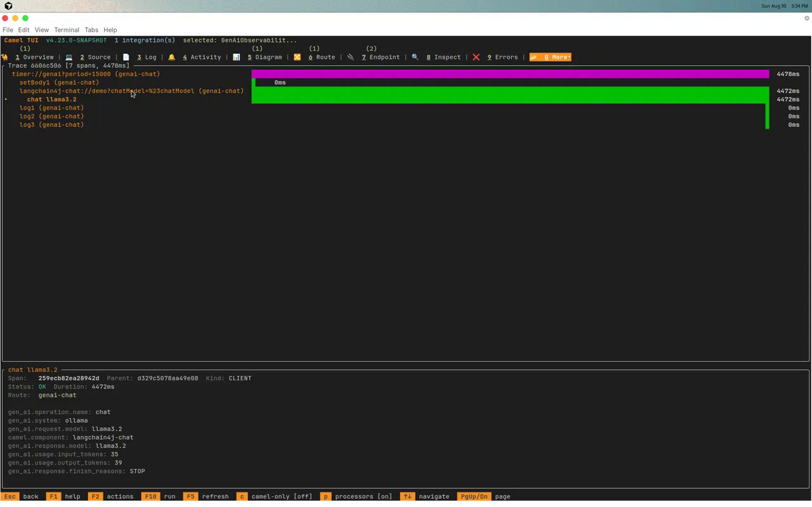

Once LLMs live inside Camel routes, the next question is always the same: how much are we spending, and where is latency coming from? Apache Camel 4.23 introduces GenAI observability — OpenTelemetry spans and Micrometer metrics for LLM producers, aligned with the OpenTelemetry GenAI semantic conventions.
This is Blog 1 in a two-part series. We start with the fastest path to visible AI telemetry: the Camel CLI, a LangChain4j chat route, Ollama, and the Camel TUI — no Spring Boot required.
The three phases of Camel Gen AI
| Phase | Name | What you do |
|---|---|---|
| 1 | Connect | Wire LLMs into routes (langchain4j-chat, openai, Spring AI) |
| 2 | Act | Give AI tools via ai-tool:, agents, MCP server, A2A |
| 3 | Operate | Run in production with guardrails, RAG, and GenAI observability |
This post covers Phase 1 plus the first observability prototype. Part 2 moves to Spring Boot with camel infra run observability, per-model Perses dashboards, and VictoriaTraces.
What you’ll build
A timer-driven route that calls Ollama every 15 seconds. For each LLM invocation you get:
- Micrometer timer:
gen_ai.client.operation - Micrometer counter:
gen_ai.client.token.usage(tagsinput/output) - OpenTelemetry child spans with
gen_ai.request.model, token counts, finish reason - Exchange headers:
CamelLangChain4jChatRequestModel,CamelLangChain4jChatResponseModel - TUI Spans tab visualization + AI Usage view (Ctrl+U)
timer:genai (every 15s)
└─ langchain4j-chat (Ollama ChatModel)
├─ camel-ai-observability-api → start GenAI span + record metrics
├─ camel-opentelemetry2 → export span attributes
└─ camel-micrometer → gen_ai.client.* metrics
camel run --observe
└─ camel-observability-services
├─ /observe/health
├─ /observe/metrics (Prometheus format)
└─ TUI Spans collector (embedded OTLP for dev)
camel tui
├─ Spans tab (shortcut: o)
└─ AI panel + Ctrl+U (CLI ask + route GenAI usage combined)
Prerequisites
- Camel CLI 4.23+ (
camel version) - Ollama installed and running
ollama pull llama3.2
ollama serve
Run the example
The example lives in the camel-jbang-examples repository at ai/genai-observability. It is registered in the CLI example catalog so you can also browse and launch it from the Camel TUI example browser.
Clone the example:
git clone https://github.com/apache/camel-jbang-examples.git
cd camel-jbang-examples/ai/genai-observability
Run with observability enabled:
camel run GenAiObservabilityRoute.java application.properties \
--observe \
--dependency=camel-langchain4j-chat \
--dependency=camel-ai-observability \
--dependency=langchain4j-ollama
Note: Today you must pass
--dependencyfor LangChain4j and GenAI observability components. A JIRA ticket will track auto-discovery of these dependencies in a future Camel CLI release.
The --observe flag adds camel-observability-services, enables health checks, Micrometer metrics, OpenTelemetry tracing, and powers the TUI Spans tab on the management port (default 9876).
Alternatively, start the bundled observability stack with camel infra run observability and run the route with --observe — metrics and traces flow to Prometheus and VictoriaTraces without extra setup.
Wait for log lines like:
LLM reply: Apache Camel is an open source integration framework...
Request model: llama3.2
Response model: llama3.2
Inspect Prometheus metrics
curl -s http://127.0.0.1:9876/observe/metrics | grep gen_ai
Example output (abbreviated):
# HELP gen_ai_client_operation GenAI client operation duration
gen_ai_client_operation_count{gen_ai_operation_name="chat",gen_ai_system="langchain4j",...} 3.0
# HELP gen_ai_client_token_usage GenAI token usage
gen_ai_client_token_usage_total{gen_ai_token_type="input",...} 42.0
gen_ai_client_token_usage_total{gen_ai_token_type="output",...} 18.0
Explore spans in the TUI
Open a second terminal:
camel tui
- Select the running integration (
genai-observabilityor similar) - Press o or navigate to More → Spans
- Wait for the next timer tick (~15s) and watch a new span appear

Each LLM call creates a child span with gen_ai.operation.name=chat, model attributes, and token usage. See the OpenTelemetry Spans section in the TUI manual for a walkthrough of the Spans tab layout.
Key span attributes:
| Attribute | Meaning |
|---|---|
gen_ai.operation.name | e.g. chat, embeddings |
gen_ai.system | Provider abstraction (e.g. langchain4j) |
gen_ai.request.model | Model requested |
gen_ai.response.model | Model that served the response |
gen_ai.usage.input_tokens | Prompt tokens |
gen_ai.usage.output_tokens | Completion tokens |
camel.component | e.g. langchain4j-chat |
Press Ctrl+U in the AI panel to toggle the AI Usage view — token consumption from both TUI camel ask prompts and route LLM calls on one screen.
Example route
The example uses Java today. Camel is also on a mission to make LLM routes approachable in YAML DSL and Kamelets for non-Java developers — expect GenAI observability to work the same way once those DSLs support the same components.
import dev.langchain4j.model.chat.ChatModel;
import dev.langchain4j.model.ollama.OllamaChatModel;
import org.apache.camel.builder.RouteBuilder;
import static java.time.Duration.ofSeconds;
public class GenAiObservabilityRoute extends RouteBuilder {
@Override
public void configure() throws Exception {
String baseUrl = getContext().resolvePropertyPlaceholders("{{ollama.baseUrl:http://localhost:11434}}");
String modelName = getContext().resolvePropertyPlaceholders("{{ollama.model:llama3.2}}");
ChatModel chatModel = OllamaChatModel.builder()
.baseUrl(baseUrl)
.modelName(modelName)
.temperature(0.2)
.timeout(ofSeconds(120))
.build();
getContext().getRegistry().bind("chatModel", chatModel);
from("timer:genai?period={{genai.period:15000}}")
.routeId("genai-chat")
.setBody(constant("In one sentence, what is Apache Camel integration?"))
.to("langchain4j-chat:demo?chatModel=#chatModel")
.log("LLM reply: ${body}")
.log("Request model: ${header.CamelLangChain4jChatRequestModel}")
.log("Response model: ${header.CamelLangChain4jChatResponseModel}");
}
}
application.properties
ollama.baseUrl=http://localhost:11434
ollama.model=llama3.2
genai.period=15000
# GenAI observability — enabled by default when backends present
camel.aiobservability.enabled=true
GenAI observability also covers openai: — run with --dependency=camel-openai and the same --observe flag; spans use the same gen_ai.* attributes.
What’s instrumented today
| Component | Operations observed |
|---|---|
langchain4j-chat | Chat completions |
langchain4j-tools | Tool-augmented LLM calls |
langchain4j-agent | AI Service agent loops |
langchain4j-embeddings | Embedding generation |
openai | Chat, embeddings, Responses API, etc. |
Troubleshooting
| Symptom | Fix |
|---|---|
No gen_ai metrics | Confirm --observe or manual observability config; check camel-ai-observability on classpath |
| Empty Spans tab | Wait for at least one LLM call; verify camel.opentelemetry2.enabled=true |
| Ollama connection refused | Run ollama serve; check ollama.baseUrl |
| Metrics port unreachable | Default management port is 9876; look for Management service available in logs |
Next up — Spring Boot and the observability stack
Part 2 wires the same gen_ai.* signals into Spring Boot with the shared observability stack, per-model Perses dashboards, and VictoriaTraces — the pattern most teams use in production.
When you are ready to move from CLI prototyping to Spring Boot, export the route with:
camel export GenAiObservabilityRoute.java --runtime spring-boot --dir ./genai-sb
Then continue in the generated Maven project (see Part 2).
Learn more
- AI Observability component source (4.23+)
- Camel TUI manual
camel askcommand- Camel AI components
- Observability Services
- JBang example
This post was written by Omar Atie (@atiaomar1978-hub) with assistance from Cursor Cloud Agent.